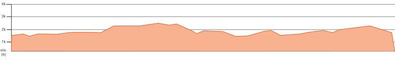
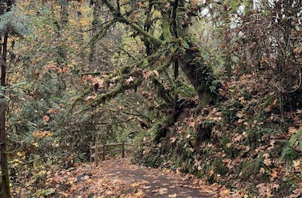

<!-- new version of route.html -->
<!-- updated version at route-detail.html -->
<!DOCTYPE html>
<html lang="en">

<head>
    <meta charset="UTF-8">
    <meta name="viewport" content="width=device-width, initial-scale=1.0">
    <meta http-equiv="X-UA-Compatible" content="ie=edge">
    <title>Route Details</title>
    <link rel="stylesheet" type="text/css" href="main.css">
    <link href="https://fonts.googleapis.com/css?family=Oswald:400,500,600|Roboto:400,400i,700,700i|Shrikhand"
        rel="stylesheet">
    <link rel="icon" type="image/png" href="assets/favicon.png" />

    <script src="https://www.gstatic.com/firebasejs/5.8.6/firebase-app.js"></script>
    <script src="https://www.gstatic.com/firebasejs/5.8.6/firebase-auth.js"></script>
    <script src="https://www.gstatic.com/firebasejs/5.8.6/firebase-database.js"></script>
</head>

<body id="page-body">
    <div id="header-container"></div>

    <main id="main">
        <!-- <section class="route-map">
            
        </section>

        <section id="elevation-details">
            
        </section>

        <section id="route-details">
            <section class="route-details-container">
                <h3>Forest Park Marathon</h3>
                <h4>26.38 miles</h4>
                <h4>3200 feet</h4>
                <h5>519280E 504589N</h5>
                <p>This route will take you across 2/3 of the length of Forest Park, through some of the less busy areas, and along some of the most scenic parts of Wildwood Trail. Note that this route is not a loop! It begins with a climb from the Lower Saltzman Road trailhead and ends at Lower Macleay Park.</p>
            </section>
        </section>

        <section id="detail-photo-section">
            <section id="detail-photo-flex">
                
                
                
                
            </section>
        </section>

        <section id="more-info-container">
            <section id="more-info-section">
                <h4>More Info</h4>
                <p>Access the starting trailhead on Lower Saltzman Road off of Highway 30. Limited street parking is available. The route ends at Lower Macleay Park, which has restrooms, parking, and a water fountain.</p>
            </section>
        </section> -->
    </main>

    <div id="footer-container"></div>

    <script type="module" src="src/route-detail.js"></script>
</body>
</html>